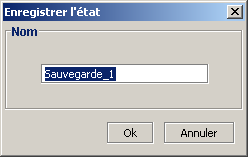
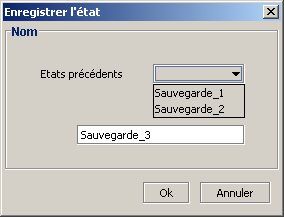
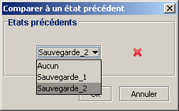
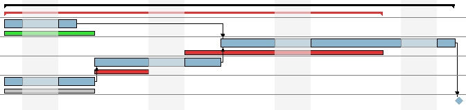

Suivi de l'avancement du projet
GanttProject permet d'effectuer un suivi de vos projets. � tout instant vous pouvez sauvegarder l'�tat
courant du projet. Ces �tats sont conserv�s par GanttProject et vous pouvez, par la suite comparer l'�tat courant
du projet � un �tat pr�c�demment sauv�. Les diff�rences entre les deux projets (le courant et l'�tat enregistr�)
sont visibles sur le diagramme de Gantt.
Enregistrement d'un �tat
- lorsque vous voulez enregistrer l'�tat courant en vue d'une
comparaison ult�rieure cliquez sur le bouton Enregistrer l'�tat
 dans la barre d'outils ;
dans la barre d'outils ;
- une bo�te de dialogue s'ouvre et vous propose de choisir un nom pour votre enregistrement :

- entrez le nom souhait� et validez.
Lorque vous enregistrer plusieurs �tats, vous avez la possibilit� d'�craser un enregistrement pr�c�dent :
- cliquez sur le bouton Enregistrer l'�tat dans la barre d'outils ;
- une bo�te de dialogue l�g�rement diff�rente de la premi�re fois s'ouvre :

- si vous s�lectionnez un �tat pr�c�dent dans la liste d�roulante et que vous validez,
il sera remplac� par le nouvel �tat.
N.B. : Le bouton Enregistrer l'�tat est gris� si aucun changement n'a �t� fait dans le projet.
Comparer l'�tat courant � un �tat pr�c�demment enregistr�
Une fois que vous avez enregistr� des �tats de votre projet, il est possible de comparer l'�tat courant
du projet � chaque �tat enregistr�.
- cliquez sur le bouton Comparer � un �tat pr�c�dent dans la barre d'outils ;
- une bo�te de dialogue s'ouvre :

- vous pouvez d�sormais voir les diff�rences sur le diagramme de Gantt.
Voici un exemple d'une comparaison entre le projet courant et un enregistrement :

Le projet courant est affich� classiquement, de la m�me mani�re que d'habitude. Les diff�rences entre le
projet courant et l'�tat s�lectionn� sont mat�rialis�es par des rectangles moins �pais
() qui se situent en dessous du rectangle de r�f�rence.
- : la t�che courante est en avance par rapport � l'�tat pr�c�dent ;
- : la t�che courante se termine � la m�me date que l'�tat pr�d�dent ;
- : la t�che courante est en retard par rapport � l'�tat pr�c�dent.
Il est donc ais� de voir quelles sont les t�ches qui sont en avance et celles qui sont en retard par
rapport � un �tat pr�c�dent. Par contre, les d�pendances entre les t�ches ne sont pas repr�sent�es entre
les t�ches de comparaison.
Supprimer un �tat pr�c�demment enregistr�
Il est possible de supprimer des �tats pr�c�demment enregistr�s :
- cliquez sur le bouton Comparer � un �tat pr�c�dent dans la barre d'outils ;
- la bo�te de dialogue s'ouvre :
- s�lectionnez l'enregistrement que vous voulez supprimer ;
- cliquez sur la croix
 .
.